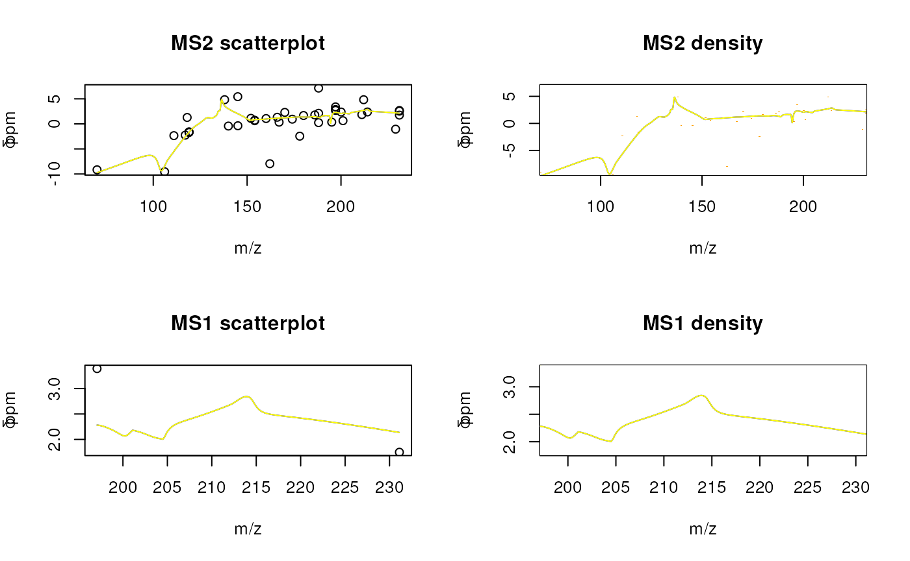

RMassBank: Non-standard usage
Michael Stravs
RMassBankNonstandard.RmdIntroduction
## Loading required package: Rcpp##
## Attaching package: 'gplots'## The following object is masked from 'package:stats':
##
## lowessThis vignette assumes you are familiar with the standard usage of RMassBank, which is documented in
vignette("RMassBank")Skipping recalibration
For instances where recalibration is not wanted, e.g. there is not
enough data, or the user wants to use non-recalibrated data,
recalibration can be deactivated. To do this, the
recalibrator entry in the settings must be set to
recalibrate.identity. This can be done in the settings file
directly (preferred):
recalibrator:
MS1: recalibrate.identity
MS2: recalibrate.identityOr, alternatively, the settings can be adapted directly via R code.
RmbDefaultSettings()
rmbo <- getOption("RMassBank")
rmbo$recalibrator <- list(
"MS1" = "recalibrate.identity",
"MS2" = "recalibrate.identity"
)
options("RMassBank" = rmbo)To show the results of using a non-recalibrated workflow, we load a workspace with pre-processed data:
w <- loadMsmsWorkspace(system.file("results/pH_narcotics_RF.RData",
package="RMassBankData"))## Warning in .updateObject.RmbWorkspace.1to2(w, ..., verbose): You are
## loading an archive from an old RMassBank version. The aggregate tables
## are not loaded from the original object, but recomputed.## Warning in .updateObject.RmbWorkspace.1to2(w, ..., verbose): If you
## hand-edited any aggregate table, the information might not be retained in
## the new object.## Warning in .updateObject.RmbWorkspace.1to2(w, ..., verbose): You are
## loading an archive from an old RMassBank version. The aggregate tables
## are not loaded from the original object, but recomputed.## Warning in .updateObject.RmbWorkspace.1to2(w, ..., verbose): If you
## hand-edited any aggregate table, the information might not be retained in
## the new object.## Warning in .updateObject.RmbWorkspace.1to2(w, ..., verbose): You are
## loading an archive from an old RMassBank version. The multiplicity
## filtering results are not loaded from the original object, but
## recomputed.## Warning in .updateObject.RmbWorkspace.1to2(w, ..., verbose): If you
## hand-edited any multiplicity filtering results, the information might not
## be retained in the new object.The recalibration curve:
recal <- makeRecalibration(w@parent,
recalibrateBy = rmbo$recalibrateBy,
recalibrateMS1 = rmbo$recalibrateMS1,
recalibrator = list(MS1="recalibrate.loess",MS2="recalibrate.loess"),
recalibrateMS1Window = 15)
w@rc <- recal$rc
w@rc.ms1 <- recal$rc.ms1
w@parent <- w
plotRecalibration(w)
Some example peaks to show the effect of recalibration:
w@spectra[[1]]@parent@mz[30:32]## [1] 133.0346 133.0381 133.9772
w@spectra[[1]]@children[[1]]@mz[15:17]## [1] 87.00286 88.13592 97.10767Now reprocess the recalibration step with the above set
recalibration.identity:
w <- msmsWorkflow(w, steps=4)The recalibration graph shows that the recalibration “curve” will do no recalibration. To verify, we can show the same peaks as before:
w@spectra[[1]]@parent@mz[30:32]## [1] 133.0346 133.0381 133.9772
w@spectra[[1]]@children[[1]]@mz[15:17]## [1] 87.00286 88.13592 97.10767Combining multiplicities
Standard multiplicity filtering, which is configurable in the settings, eliminates peaks which are observed only once for a compound. This eliminates spurious formula matches for random noise efficiently. It works well if either many spectra are recorded per compound, or if the same collision energy is present twice (e.g. with different resolutions). It sometimes fails for spectra on the “outer end” of the recorded collision energies when that spectrum is only present once – peaks which appear only in the highest or only in the lowest recorded energy can be erroneously deleted. To prevent this, one can re-run the workflow, read a second set of spectra for every compound (the second most intense) and combine the peak multiplicities of the two analyzed runs. (Mutiplicity filtering can also be switched off completely.)
Example:
RmbDefaultSettings()
getOption("RMassBank")$multiplicityFilter## [1] 2
# to make processing faster, we only use 3 spectra per compound
rmbo <- getOption("RMassBank")
rmbo$spectraList <- list(
list(mode="CID", ces = "35%", ce = "35 % (nominal)", res = 7500),
list(mode="HCD", ces = "15%", ce = "15 % (nominal)", res = 7500),
list(mode="HCD", ces = "30%", ce = "30 % (nominal)", res = 7500)
)
options(RMassBank = rmbo)
loadList(system.file("list/NarcoticsDataset.csv",
package="RMassBankData"))
w <- newMsmsWorkspace()
files <- list.files(system.file("spectra", package="RMassBankData"),
".mzML", full.names = TRUE)
w@files <- files[1:2]First, the spectra are read and processed until reanalysis (step 7) normally:
w1 <- msmsWorkflow(w, mode="pH", steps=c(1))
# Here we artificially cut spectra out to make the workflow run faster for the vignette:
w1@spectra <- as(lapply(w1@spectra, function(s)
{
s@children <- s@children[1:3]
s
}),"SimpleList")
w1 <- msmsWorkflow(w1, mode="pH", steps=c(2:7))
Subsequently, we re-read and process the “confirmation spectra”, i.e. the second-best spectra from the files. Therefore, we will have two sets of spectra for each compound and every real peak should in theory occur twice.
w2 <- msmsWorkflow(w, mode="pH", steps=c(1), confirmMode = 1)
# Here we artificially cut spectra out to make the workflow run faster for the vignette:
w2@spectra <- as(lapply(w2@spectra, function(s)
{
s@children <- s@children[1:3]
s
}),"SimpleList")
w2 <- msmsWorkflow(w2, mode="pH", steps=c(2:7))Finally, we combine the two workspaces for multiplicity filtering, and apply the last step in the workflow (multiplicity filtering).
wTotal <- combineMultiplicities(c(w1, w2))
wTotal <- msmsWorkflow(wTotal, steps=8, mode="pH", archivename = "output")Subsequently, we can proceed as usual with
mbWorkflow:
mb <- newMbWorkspace(wTotal)
# [...] load lists, execute workflow etc.Session information
## R version 4.3.1 (2023-06-16)
## Platform: x86_64-pc-linux-gnu (64-bit)
## Running under: Ubuntu 22.04.3 LTS
##
## Matrix products: default
## BLAS: /usr/lib/x86_64-linux-gnu/openblas-pthread/libblas.so.3
## LAPACK: /usr/lib/x86_64-linux-gnu/openblas-pthread/libopenblasp-r0.3.20.so; LAPACK version 3.10.0
##
## locale:
## [1] LC_CTYPE=en_US.UTF-8 LC_NUMERIC=C
## [3] LC_TIME=en_US.UTF-8 LC_COLLATE=en_US.UTF-8
## [5] LC_MONETARY=en_US.UTF-8 LC_MESSAGES=en_US.UTF-8
## [7] LC_PAPER=en_US.UTF-8 LC_NAME=en_US.UTF-8
## [9] LC_ADDRESS=en_US.UTF-8 LC_TELEPHONE=en_US.UTF-8
## [11] LC_MEASUREMENT=en_US.UTF-8 LC_IDENTIFICATION=en_US.UTF-8
##
## time zone: UTC
## tzcode source: system (glibc)
##
## attached base packages:
## [1] stats graphics grDevices utils datasets methods base
##
## other attached packages:
## [1] gplots_3.1.3 RMassBankData_1.38.0 RMassBank_3.13.1
## [4] Rcpp_1.0.11 BiocStyle_2.28.1
##
## loaded via a namespace (and not attached):
## [1] DBI_1.1.3 rcdklibs_2.8 bitops_1.0-7
## [4] gridExtra_2.3 logger_0.2.2 rlang_1.1.1
## [7] magrittr_2.0.3 clue_0.3-65 compiler_4.3.1
## [10] png_0.1-8 systemfonts_1.0.5 vctrs_0.6.4
## [13] rvest_1.0.3 stringr_1.5.0 ProtGenerics_1.35.4
## [16] pkgconfig_2.0.3 fastmap_1.1.1 caTools_1.18.2
## [19] readJDX_0.6.1 utf8_1.2.4 rmarkdown_2.25
## [22] preprocessCore_1.62.1 itertools_0.1-3 ragg_1.2.6
## [25] purrr_1.0.2 xfun_0.40 zlibbioc_1.46.0
## [28] cachem_1.0.8 ChemmineR_3.52.0 jsonlite_1.8.7
## [31] BiocParallel_1.34.2 data.tree_1.1.0 parallel_4.3.1
## [34] cluster_2.1.4 R6_2.5.1 bslib_0.5.1
## [37] stringi_1.7.12 limma_3.56.2 jquerylib_0.1.4
## [40] bookdown_0.36 assertthat_0.2.1 iterators_1.0.14
## [43] knitr_1.44 base64enc_0.1-3 R.utils_2.12.3
## [46] IRanges_2.34.1 tidyselect_1.2.0 rcdk_3.8.1
## [49] yaml_2.3.7 doParallel_1.0.17 codetools_0.2-19
## [52] affy_1.78.2 lattice_0.22-5 tibble_3.2.1
## [55] plyr_1.8.9 Biobase_2.60.0 evaluate_0.22
## [58] desc_1.4.2 rJava_1.0-6 xml2_1.3.5
## [61] pillar_1.9.0 affyio_1.70.0 BiocManager_1.30.22
## [64] KernSmooth_2.23-22 DT_0.30 foreach_1.5.2
## [67] stats4_4.3.1 MSnbase_2.26.0 MALDIquant_1.22.1
## [70] ncdf4_1.21 generics_0.1.3 rprojroot_2.0.3
## [73] RCurl_1.98-1.13 S4Vectors_0.38.2 ggplot2_3.4.4
## [76] munsell_0.5.0 scales_1.2.1 gtools_3.9.4
## [79] glue_1.6.2 webchem_1.3.0 tools_4.3.1
## [82] data.table_1.14.8 mzID_1.38.0 vsn_3.68.0
## [85] mzR_2.37.3 fs_1.6.3 XML_3.99-0.15
## [88] grid_4.3.1 impute_1.74.1 fingerprint_3.5.7
## [91] MsCoreUtils_1.15.7 colorspace_2.1-0 cli_3.6.1
## [94] textshaping_0.3.7 rsvg_2.6.0 fansi_1.0.5
## [97] dplyr_1.1.3 pcaMethods_1.92.0 gtable_0.3.4
## [100] R.methodsS3_1.8.2 sass_0.4.7 digest_0.6.33
## [103] BiocGenerics_0.46.0 rjson_0.2.21 htmlwidgets_1.6.2
## [106] memoise_2.0.1 htmltools_0.5.6.1 pkgdown_2.0.9.9000
## [109] R.oo_1.25.0 lifecycle_1.0.3 httr_1.4.7
## [112] MASS_7.3-60